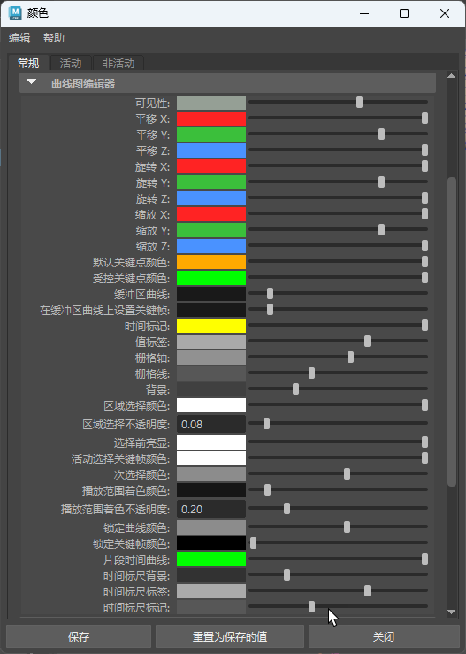

曲线图编辑器(Graph Editor)使用颜色指定曲线和关键帧的不同状态。
可以在颜色设置(Color Settings)和“曲线图编辑器”(Graph Editor)的“更改曲线颜色”(Change Curve Color)选项（位于“曲线图编辑器”(Graph Editor)的“编辑”(Edit)菜单中）中自定义这些颜色和其他“曲线图编辑器”(Graph Editor)颜色。还可以使用“曲线图编辑器”(Graph Editor)主题减少某些视觉类型的视觉疲劳。

颜色设置 曲线图编辑器颜色
在“颜色设置”(Color Settings)中更改“曲线图编辑器”(Graph Editor)颜色
- 转到主菜单栏中的，然后选择“颜色设置”(Color Settings)。
- 向下滚动到“曲线图编辑器”(Graph Editor)区域，双击色样以打开颜色选择器(Color Chooser)，从中可以更改“颜色设置”(Color Settings)中选定属性的颜色。
- 单击“保存”(Save)。若要将颜色还原为其默认值，请在颜色设置(Color Settings)窗口顶部的菜单中选择。
- 曲线图编辑器播放范围着色
- 也可以在颜色设置(Color Settings)中更改播放范围着色的默认颜色和不透明度。
- 曲线图编辑器时间标尺
-
也可以在颜色设置(Color Settings)中更改时间标尺的默认颜色和不透明度，以及时间标尺数字和标记。

曲线图编辑器时间标尺
曲线图编辑器曲线颜色
默认情况下，曲线在“曲线图编辑器”(Graph Editor)中以特定颜色表示，以反映曲线所表示的轴。可以在“曲线图编辑器”(Graph Editor)的“更改曲线颜色”(Change Curve Color)选项（位于“曲线图编辑器”(Graph Editor)“编辑”(Edit)菜单中）中自定义单个动画曲线的颜色。
- 红色曲线
- 红色曲线指示 X 轴上的动画，无论是平移、旋转还是缩放动画。Maya 中的红色用于表示 X 轴。
- 绿色曲线
- 绿色曲线指示 Y 轴上的动画，无论是平移、旋转还是缩放动画。Maya 中的绿色用于表示 Y 轴。
- 蓝色曲线
- 蓝色曲线指示 Z 轴上的动画，无论是平移、旋转还是缩放动画。Maya 中的蓝色用于表示 Z 轴。
- 烘焙通道
- 烘焙通道会在曲线的每一帧上放置关键帧。
- 灰色曲线
- 带有黑色关键帧的灰色曲线是锁定的曲线。
- 淡入曲线
- 带有普通关键帧的淡入曲线是禁用曲线或通道。
- 紫色曲线
- 紫色曲线是时间扭曲或速度曲线。通过时间扭曲曲线，您可以修改（或扭曲）动画计时，以便可以在一个位置管理多个动画曲线的整体序列化，而不是单独调整每个平移、旋转和缩放曲线。有关详细信息，请参见创建时间扭曲效果。
- 暗显曲线
- 在“曲线图编辑器”(Modern Graph Editor)中淡入的曲线是引用的曲线，这意味着它们链接到被引用文件中的动画。默认情况下，它们不可编辑：这显示为黑色（锁定）关键帧。
曲线图编辑器关键帧颜色/形状
曲线图编辑器(Graph Editor)中的关键帧更改其外观以显示其状态。
| 关键帧 | 状态 |
|---|---|
| 空心 与实心 关键帧 | 空心关键帧是具有切线的关键帧（默认切线类型为“自动”(Auto)）。实心关键帧具有固定切线。（选择“切线 > 固定”(Tangents > Fixed)。） |

|
菱形关键帧是非加权关键帧。请参见更改切线权重。 |
| 方形关键帧是加权关键帧。请参见更改切线权重。 | |

|
圆形关键帧是四元数曲线上的关键帧（无切线）。四元数旋转是计算 X、Y、Z 动画曲线的旋转，以避免万向锁定问题。请参见设定曲线的旋转插值。 |
| 绿色关键帧是受控关键点。受控关键点是与相邻关键帧保持成比例时间关系的特殊关键帧，因此您可以调整动画计时，同时在动画曲线上的点处保留属性值。请参见设置受控关键点。 | |
| 黑色关键帧是锁定的关键帧，不能进行编辑。这些关键帧显示在锁定通道和引用曲线上。请参见编辑被引用文件中的动画曲线。 |
曲线图编辑器切线颜色
通过关键帧切线，您可以调整关键帧的接近角度和背离角度。有关示例，请参见使用关键帧切线修改曲线。